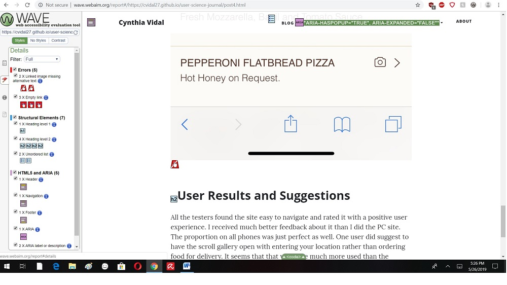
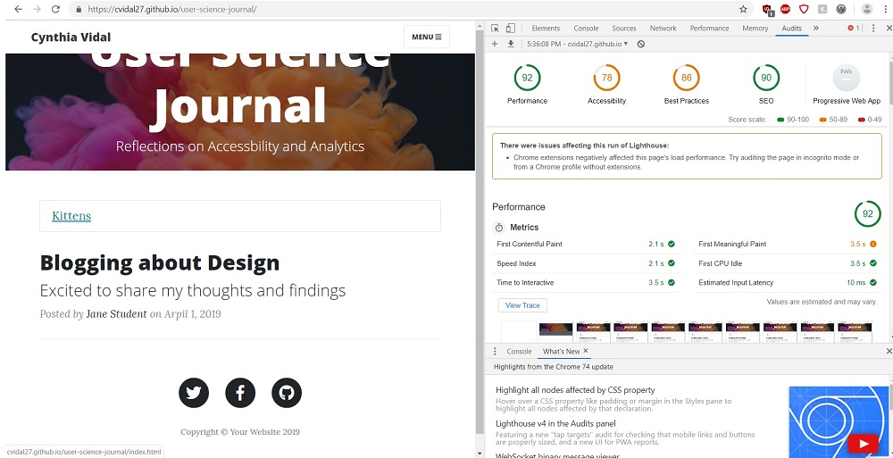
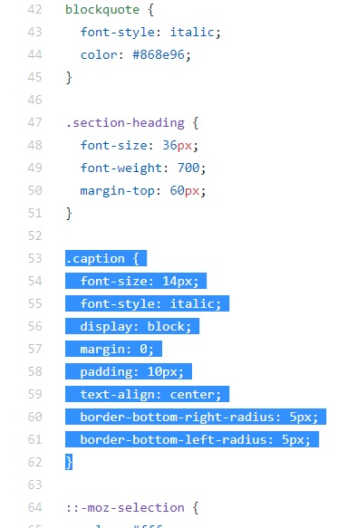
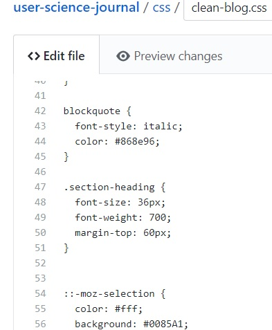
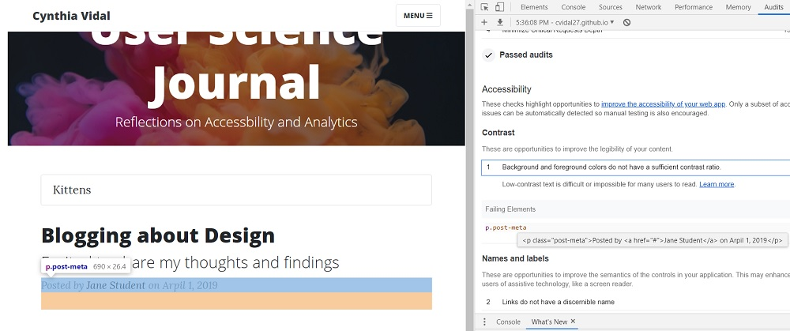
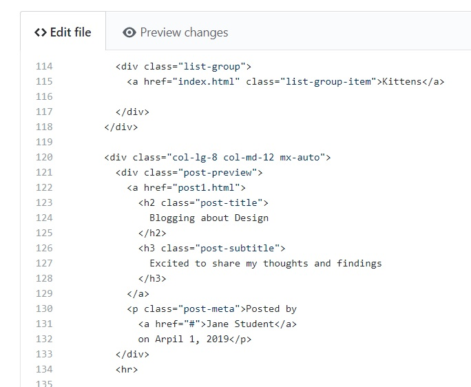
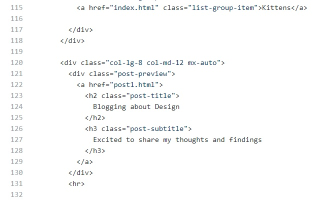
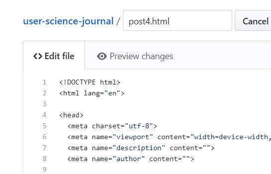
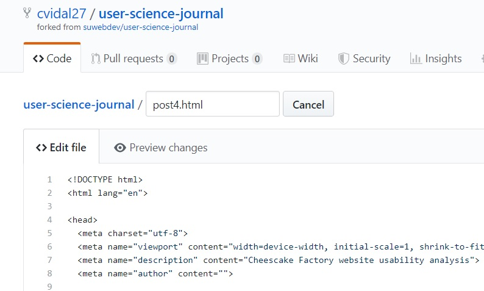

For my analysis on my User Science Journal I first started with using WAVE for the About Me, one of the blog posts, and the homepage. Wave generally showed me errors regarding links. The social media slogans didn’t have links and the blog post as well showed the same with missing links for the photos as well. Lighthouse had much more details to show how the site can be improved. Such as resizing the images, remove unused CSS and summarizing page content. I will be skimming through my site to make 3 changes suggested by the auditing tools and make it more user friendly.
 Fixing Errors
The first of errors I decided to fix was to clean up CSS. This suggestion I think will help the site work better without it needing to think about unnecessary codes. Below is a snippet of before and after screen shots of the code. For example, I am not using captions for photos so there is little point in keeping the code in there.
 Another change I made was to eliminate the text in the front page that showed an italic text that was too light for some to see. The line was an example, so I just deleted it completely since it had nothing to do with my blog and keeps users from being confused about it. Below is the before and after of the code.
  My third change was to correct an error showing the description text was empty. This intrigued me because I had no idea what was meant. So I went into the code and searched. Took me a minute to finally find what they meant and it is supposed to be at the top nav bar it seems. I can see how for searchability this would be important. Here is a before and after of the code.
 Conclusion
I think I was expecting more errors and overall the changes were a bit challenging making sure that I wasn’t changing anything important. Some were harder to understand than others, but I did my best to work through some that would make a difference. I like the bootstrap framework because it not hard to work with compared to others I have explored. The design is simple and the errors needed to be fixed seem to be easy enough to understand where someone who is new to usability can learn to navigate around.